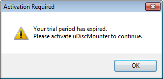
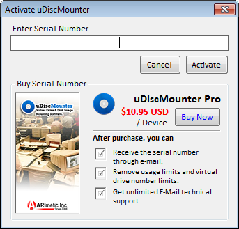
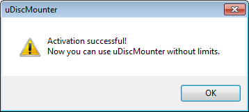
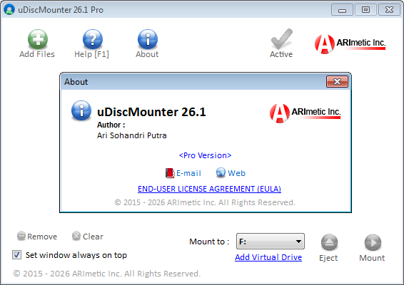

HOW TO ACTIVATE UDISCMOUNTER PRO
>> Operations : Mount & Eject files
1. To activate uDiscMounter, click the "Activate" button on the main window. If the evaluation period or usage limit has been exceeded, a notification similar to the one shown below will appear.

2. An activation dialog window will appear, as shown in the image below. Enter the serial number provided to you after your payment confirmation into the "Enter Serial Number" field.

3. Click the "Activate" button. If the activation is successful, a notification similar to the one shown below will appear, confirming that uDiscMounter has been successfully activated.

4. Congratulations! Your copy of uDiscMounter has been successfully activated and can now be used without any usage limitations.
